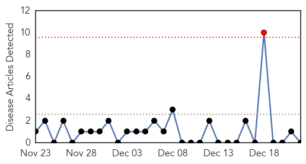
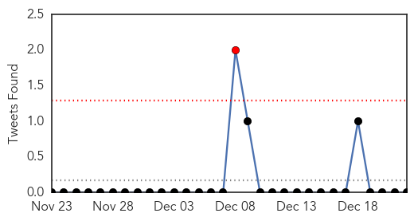
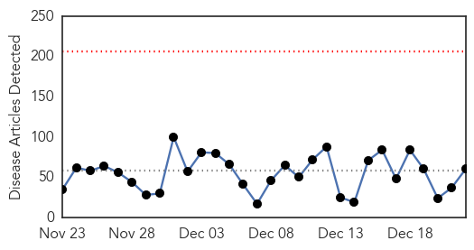
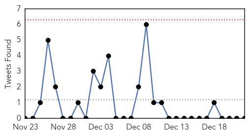
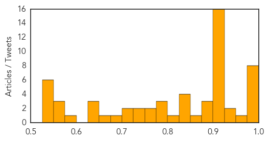

MERS
30-Day Web Trend
1 alerts, 0 warnings

30-Day Twitter Trend
1 alerts, 0 warnings

Article Locations


Article Confidences

Top Articles:
-
No articles found for Dec 22, 2014
Top Tweets:
-
No tweets found for Dec 22, 2014
Unknown
30-Day Web Trend
0 alerts, 0 warnings

30-Day Twitter Trend
0 alerts, 0 warnings

Article Locations

Article Confidences
Top Articles:
- 0.992
- Enterovirus D-68 infection confirmed in L.A. County
- 0.992
- KDHE and CDC Investigate New Virus
- 0.990
- Take the flu seriously, get vaccinated
- 0.989
- State says new virus found after resident's death
- 0.988
- Officials: Reduce risk of flu this season - DailyPress.net
- 0.984
- Some hospitals limit visits as flu spreads
- 0.980
- Flu increasing; hospital visitation policy tightened
- 0.979
- Tick-borne virus discovered after death of Kansas man
- 0.955
- Flu season picking up steam just before the holidays
- 0.949
- Two pediatric flu deaths reported in Eastern Virginia
- 0.940
- Cedar Rapids, Iowa News, Sports, and Weather
- 0.920
- Flu kills two Virginia children; doctors offer advice on how to stay healthy
- 0.917
- Chicago Tribune
- 0.917
- Chicago Tribune
- 0.917
- Chicago Tribune
- 0.917
- Chicago Tribune
- 0.917
- Chicago Tribune
- 0.917
- Chicago Tribune
- 0.917
- Chicago Tribune
- 0.917
- Chicago Tribune
- 0.917
- Chicago Tribune
- 0.917
- Chicago Tribune
- 0.917
- Chicago Tribune
- 0.917
- Chicago Tribune
- 0.917
- Chicago Tribune
- 0.917
- Chicago Tribune
- 0.910
- The world windows to Thailand
- 0.899
- Caramel Apple Listeria Hits Missouri's East and NE
- 0.894
- Briefs: Chanute Historical Society invites more members
- 0.891
- Statement by Shri Jagat Prakash Nadda Minister of Health Family Welfare
- 0.872
- Leapin’ Lizards! Salmonella from Pet Reptiles Climbs
- 0.844
- Third person dies in Edinburgh Royal Infirmary C diff outbreak
- 0.843
- Dozens of People Reportedly Infected; Caramel Apples Linked?
- 0.834
- Cambodia Charges Unlicensed Health Worker Over Mass HIV Infection
- 0.827
- Cambodia Charges Unlicensed Health Worker Over Mass HIV Infection
- 0.813
- Mississippi teacher with flu dies
- 0.796
- Further FMD cases in South Korea
- 0.784
- Testing of H5N1 samples to be done at PGI soon
- 0.783
- Mass HIV infection fears in Cambodia
- 0.765
- Mind Your Mouth: How Oral Health Affects Overall Health
- 0.764
- Vaccine Progress For Chronic Wasting DiseaseMedicalResearch.com
- 0.729
- Germany to step up bird flu testing after new cases discovered
- 0.729
- Germany to step up bird flu testing after new cases discovered
- 0.708
- Advice to Consumers About Caramel Apple Listeria Outbreak
- 0.704
- Germany to step up bird flu testing after new cases discovered
- 0.693
- Unlicensed Cambodian doctor charged over mass HIV infection
- 0.655
- Doctor murder rap: 106 patients get HIV, man charged with murder for syringe use
- 0.644
- Virus, pests blamed for Kan. death
- 0.633
- Flu Forces School District to Close Early for Christmas
- 0.630
- Yem Chrin Faces Charges For Allegedly Spreading HIV To More Than 100 Villagers
Showing top 50 articles...
Top Tweets:
-
No tweets found for Dec 22, 2014